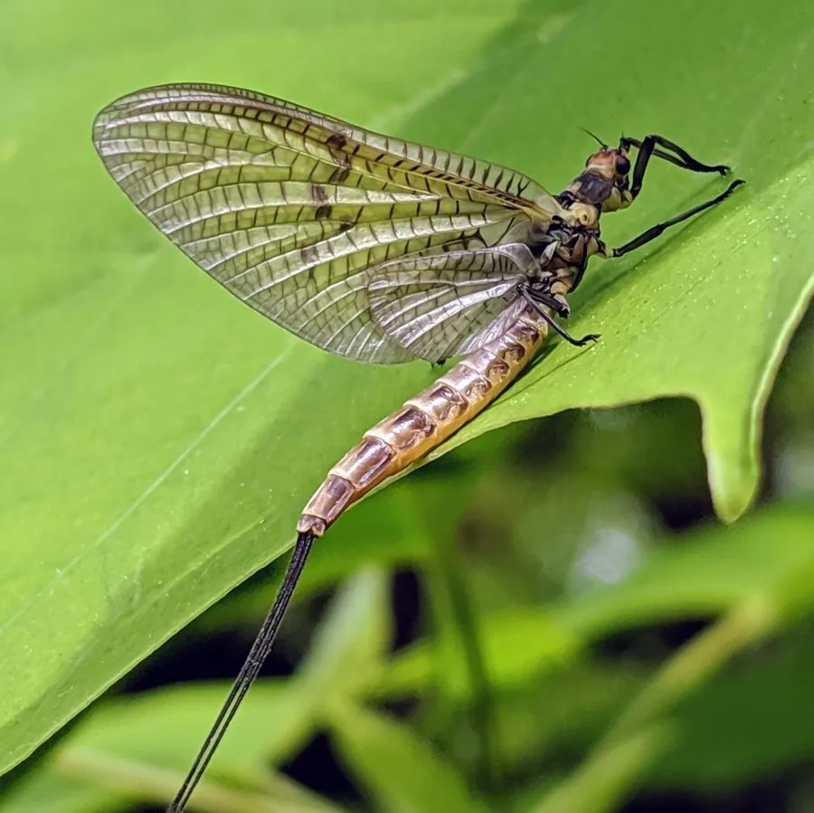

昆虫 · 动物界
蜉蝣 Ephemera danica

寿命极短的原始有翅昆虫，成虫体态轻盈、尾须细长，常成群在水面上方飞舞，交配产卵后很快死亡。
- 分类
- 门节肢动物门纲昆虫纲目蜉蝣目科蜉蝣科属蜉蝣属
- 栖息环境
- 清洁溪流与湖泊附近，幼虫生活在水底泥沙和水草间
- 地理分布
- 北半球的淡水水域，欧亚大陆和北美常见
- 保护级别
- 暂无评估
物种志
蜉蝣成虫体长 1.5–2.5 cm，身体细长柔软，体色为浅黄至褐色。它的复眼大，触角极短；翅薄而透明，前翅大而后翅退化，静止时翅直立在背上；腹部末端有细长的尾须，常延长为两根到三根。
蜉蝣分布于北半球的清洁溪流和湖泊附近，幼虫水生，生活在水底泥沙或水草间，取食藻类和有机碎屑，需经多次蜕皮、历时数月至数年才羽化。成虫的寿命很短，通常只有数小时至数天，甚至不进食，唯一任务是交配繁殖；黄昏时成虫常成群在水面上方飞舞，形成“蜉蝣云”。雌虫将卵产在水面或水中，孵化后进入水生幼虫阶段继续发育。蜉蝣对水质要求较高，是水质监测的重要指示昆虫。
形态与习性
- 食性幼虫取食藻类和有机碎屑，成虫多不进食
- 体长成虫 1.5–2.5 cm
- 幼虫期水生，历时数月至数年，多次蜕皮
- 成虫寿命通常只有数小时至数天
- 繁殖黄昏成群飞舞交配，雌虫将卵产在水面
- 指示作用对水质要求高，是水质监测的指示昆虫
趣味知识
- 蜉蝣成虫寿命只有数小时到数天，主要任务是交配繁殖。
- 它的幼虫要在水中生活数月至数年才羽化。
- 黄昏时成群的蜉蝣在水面上方飞舞，形成“蜉蝣云”。
- 蜉蝣对水质要求较高，是水质监测的指示昆虫。